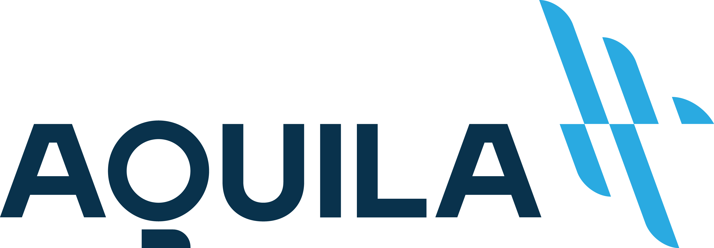
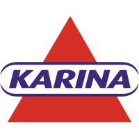
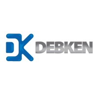
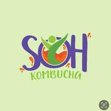

Diagnóstico baseado em dados
Coleta estruturada de dados, análise de causa-raiz com Ishikawa e Pareto, e mapeamento detalhado do estado atual para identificar gaps operacionais com precisão técnica.
Engenheiro · Gestor de projetos · Gestão Empresarial
Transformo desafios operacionais em crescimento sustentável — unindo rigor técnico, Lean Six Sigma e gerenciamento de projetos para gerar impacto real nos resultados do negócio.
Impacto mensurável entregue em projetos reais.
Um processo estruturado em três etapas para transformar desafios operacionais em resultados sustentáveis.
Coleta estruturada de dados, análise de causa-raiz com Ishikawa e Pareto, e mapeamento detalhado do estado atual para identificar gaps operacionais com precisão técnica.
Mapeamento de processos com BPMN, aplicação de Lean Six Sigma e DMAIC para redesenhar fluxos, eliminar desperdícios e estruturar sistemas de gestão eficientes.
Implementação de KPIs e governança de indicadores, capacitação de equipes e dashboards para garantir a eficiência das melhorias implementadas e a tomada de decisão orientada a dados.
Frameworks e ferramentas aplicados com rigor técnico para gerar eficiência e crescimento mensurável.
Metodologia para redução de variabilidade e eliminação de desperdícios em processos industriais, com foco em eficiência e qualidade.
Implantação e manutenção de sistemas de qualidade com foco em conformidade, melhoria contínua e atendimento às normas regulatórias.
Estruturação e execução de projetos com metodologias ágeis e tradicionais, garantindo entregas dentro do escopo, prazo e custo.
Transformação de dados operacionais em dashboards e relatórios estratégicos para apoiar a tomada de decisão baseada em indicadores.
Comunicação em múltiplos idiomas para atuação em contextos nacionais e internacionais.
Trajetória profissional com foco em resultados e melhoria contínua em empresas do setor industrial e alimentício.

Projetos de diagnóstico organizacional e melhoria operacional com ganhos médios de 15–20% de produtividade. Mapeamento e redesenho de processos com Lean Six Sigma e BPMN, implantação de sistemas de gestão, governança de KPIs e dashboards.


Implantação e coordenação do sistema de gestão da qualidade, definição de critérios de conformidade de materiais, qualificação de fornecedores e condução de auditorias internas. Controles de processo com foco em redução de não conformidades.

Estruturação do Manual de Boas Práticas de Fabricação (BPF), padronização de processos produtivos, mapeamento de fluxos e implantação de controles de não conformidades em startup do setor de bebidas fermentadas.
Suporte na gestão da qualidade e desenvolvimento de procedimentos operacionais padrão em empresa do setor alimentício.
Base técnica sólida combinando engenharia, gestão e certificações de excelência.
Fundação Getulio Vargas — FGV
Faculdade de Engenharia Salvador Arena
Colégio Anchieta
Estou disponível para novos projetos, parcerias e desafios. Entre em contato e vamos estruturar algo juntos.
andrevinicius.fanchini@gmail.com